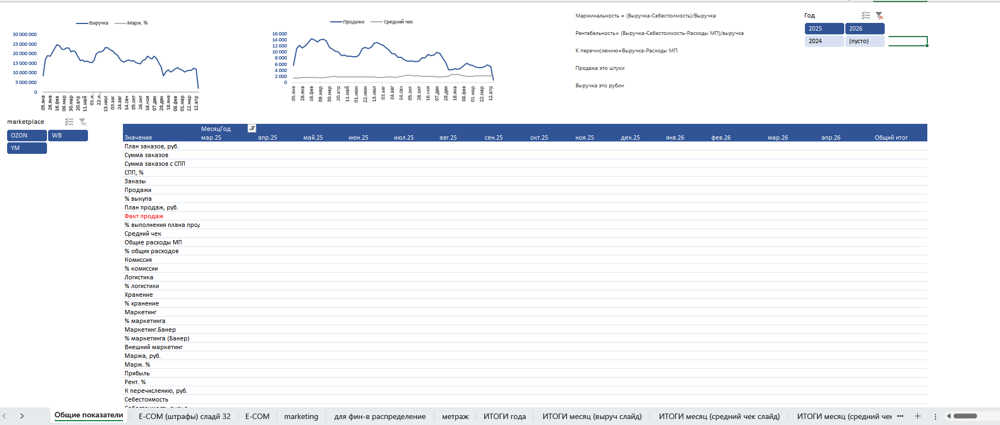

Данные WB и OzonАналитика маркетплейсов
Сбор и обработка данных WB и Ozon
Подготовка данных разных кабинетов для регулярной отчётности по продажам, начислениям и расходам.
Задача и моя работа
- Выгрузка данных через API и обработка отчётных файлов.
- Приведение полей и типов данных к единому формату.
- Объединение данных кабинетов и проверка дублей.
- Подготовка таблиц для дальнейшего анализа.
Результат: единая основа для отчётов и меньше ручных операций при подготовке данных.